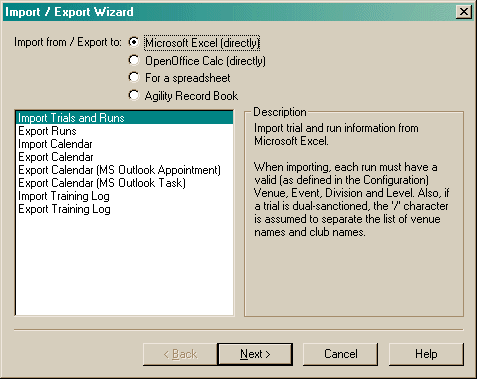
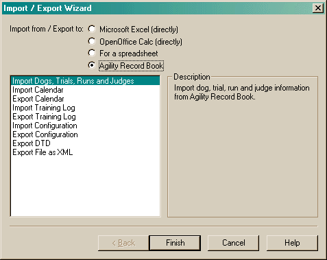

The Import Export Wizard allows you to import or export data directly with Microsoft Excel or OpenOffice Calc (providing they can be found on your system). In addition, it can import or export data in a text form that is usable by most spreadsheet programs. Finally, it can import and export data in the Agility Record Book format for exchange with other Agility Record Book users. The options available between Excel or Calc (the text spreadsheet form uses the same options as Excel/Calc) and Agility Record Book formats are slightly different, as you can see from the dialogs.
Special note for exporting to Microsoft Outlook: Even though Outlook supports importing Excel, tab-delimited and comma-delimited files, the only format I have been able to successfully import (in Outlook 2003) is comma-delimited. All three files look correct, Outlook simply fails to import Excel and tab-delimited files.

When you select in entry in the list, a description will be displayed on the right describing what will happen. When exporting for a spreadsheet, you need to specify the format. Also, when you import from a spreadsheet, you also need to specify the format. Note, when working with Excel or Calc, the delimiter section shown in the previous links will be hidden since it is not necessary.

When importing and exporting in the Agility Record Book format, the only additional information you need to supply is the name of the file.